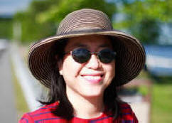
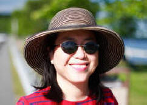

個人資訊
| 現職： | 國立政治大學教育學教授 |  |
|---|---|---|
| 地址： | 116 臺北市文山區指南路二段64號 國立政治大學教育系 |
|
| 電話： | 02-29393091*88007 | |
| 傳真： | 02-29396823 | |
| E-mail： | iaezcpc@nccu.edu.tw |
| 現職： | 國立政治大學教育學教授 |  |
|---|---|---|
| 地址： | 116 臺北市文山區指南路二段64號 國立政治大學教育系 |
|
| 電話： | 02-29393091*88007 | |
| 傳真： | 02-29396823 | |
| E-mail： | iaezcpc@nccu.edu.tw |
| 1992： | 美國洛杉磯加州大學（UCLA）博士後研究 |
| 1987~1992： | 美國洛杉磯加州大學（UCLA）比較及國際教育研究所 |
| 2012~2013： | 美國傅爾布萊特學者、美國邁阿密大學訪問學者 |
| 2012： | 日本廣島大學公民素養教育國際研討會keynote speaker |
| 2012： | 日本秋田國際教養大學客座教授(主講"兩岸化"課程 (AIU)) |
| 2011~迄今： | Chinese Education and Society (台灣高等教育大眾化誰獲益) 專刊客座主編 |
| 2007~迄今： | 國立政治大學教師會會長 |
| 2011： | 參與教育部「高中教育政策白皮書」撰寫 |
| 2011： | 「反對獨尊SSCI SCI等指標 找回大學求是精神」連署聲明 |
| 2011： | 台灣競爭力論壇教育組召集人 |
| 2006~迄今： | 教改總體檢論壇執行秘書 |
| 2001~2002： | 國立政治大學兩性平等委員會召集人 |
| 1999~迄今： | 國立政治大學教育學系教授 |
這是一個被喻為具有「俠女風格」的大學教師，自小即以行俠仗義、扶助弱小為志。小學除了當班長，也當躲避球校隊隊長。不過由於方向感不太好，國中開學第一天就迷路，幸好有好心的計程車司機搭救，送到學校只收三塊錢（那時起跳是四元）。在升學壓力下，畢業時竟也得到五育均衡獎。
高中聯考因一篇「推動搖籃的手」作文考試失利，離家出走。後來發憤向上，再度當班長，也在校運鐵餅項目中奪魁。原來從小想當開刀房醫師的她，卻因作文得獎，而重新選擇人生方向。那年春天，木柵發生同校學姐遭性侵害的不幸事件，於是決定日後要從事性別教育的推動。
上大學期間，校園經常淹水，於是四年後學會游泳換氣。同班同學一直認為她日後會當校長，可是她卻在研究所考試失利後選擇下鄉服務。有一回到原住民部落探訪，下山途中司機先生竟在荒郊野外中途停車，不久從路旁的樹叢中鑽出，捧著粉嫩的水蜜桃送給她，令她終生難忘！
研究所期間，專心國際事務的學習，獲選代表研究生訪日研習，開拓視野，堪稱國內第一代哈日族！五年後，通過教育部公費留考出國，在學業壓力下，多次參與研究生學會及國際學生志工活動，並獲得美國大學女性學會（AAUW）世界和平獎的殊榮。
畢業返國後，發現博士學位工作不易，只得回到學界服務。原來一直專注國際與比較教育的她，近年來回頭關懷台灣教改，於二OO三年同台大黃光國教授等人發起「教改萬言書」，也寫了「誰捉弄了台灣教改？」一書。二OO五到O六年與一群志同道合的朋友、團體，辦了十六場教改總體檢論壇（網址：http://163.20.78.133），全面檢討台灣教改。二OO七年利用訪問哈佛大學期間，鑽研十多個國家的教育改革，從中思索台灣教育的未來。她經常藉著一枝禿筆，透過報章雜誌來傳達她對台灣社會的關懷，也每週上教會，為國內的教育代禱。